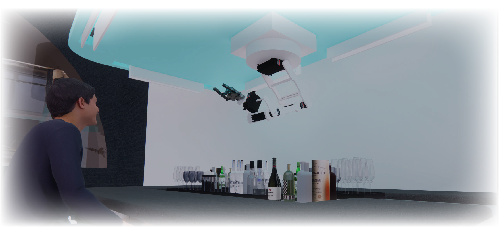
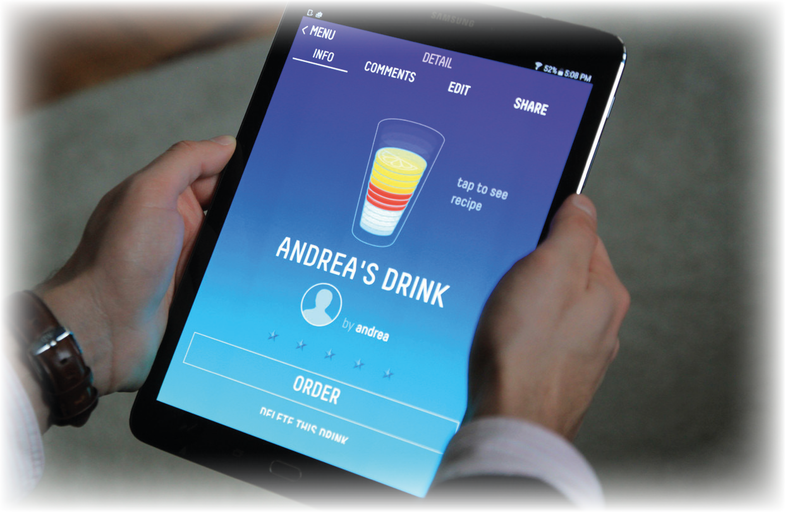
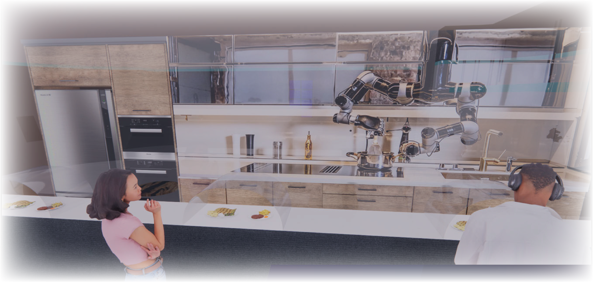
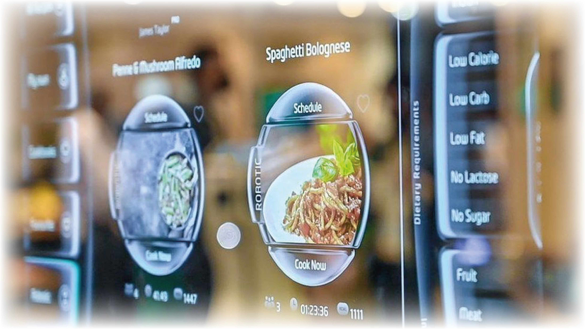

How To
Welcome to the RoboBar menu. Our autonomous systems and robots are capable of creating any food you can imagine. Simply tell us what you want, and we'll make it for you!
Bionic Bartender
 |
Bionic Bar is a revolutionary concept that reimagines the traditional bar experience by integrating advanced technology and robotics. At Bionic Bar, guests can order drinks using a digital platform that offers a seamless and efficient way to customize their drinks and place their orders.
When guests arrive at Bionic Bar, they can access the digital ordering platform using a tablet or smartphone. The platform offers a range of customizable drink options, including cocktails, beers, and wines, with detailed descriptions of each drink's ingredients and flavors.

Once guests have made their drink selections, their order is transmitted directly to the robotic bartenders, who use advanced algorithms and sensors to precisely measure and mix the ingredients. The robotic arms move with fluid precision, creating drinks that are both visually stunning and expertly crafted.
The use of a digital ordering platform at Bionic Bar offers a number of benefits to guests. They can browse drink options at their own pace, customize their orders to their exact specifications, and avoid the need for human interaction during the ordering process. The platform also allows guests to view their drink orders in real-time and track the progress of their orders as they are being prepared by the robotic bartenders.
Moley Kitchen
 |
Moley Kitchen is a revolutionary dining experience that combines cutting-edge technology with expertly crafted meals. The restaurant features a fully automated kitchen that uses robotics and advanced technology to prepare dishes with precision and efficiency.
To enhance the dining experience, Moley Kitchen offers a digital ordering system that allows guests to customize their meals and place their orders in a streamlined and convenient way. When guests arrive at the restaurant, they can use their smartphones or tablets to access the digital ordering platform. The platform offers a variety of customizable meal options, including appetizers, entrees, and desserts, with detailed descriptions of each dish's ingredients and flavors.

Once guests have made their meal selections, their order is transmitted directly to the automated kitchen, where the robotic arms and advanced sensors work together to prepare the food. The robotic arms can chop, sauté, and even plate the food, creating dishes that are both visually stunning and expertly crafted.
The digital ordering system at Moley Kitchen offers several benefits to guests. They can browse meal options at their own pace, customize their orders to their exact specifications, and avoid the need for human interaction during the ordering process. Additionally, the platform allows guests to view their meal orders in real-time and track the progress of their orders as they are being prepared by the automated kitchen.